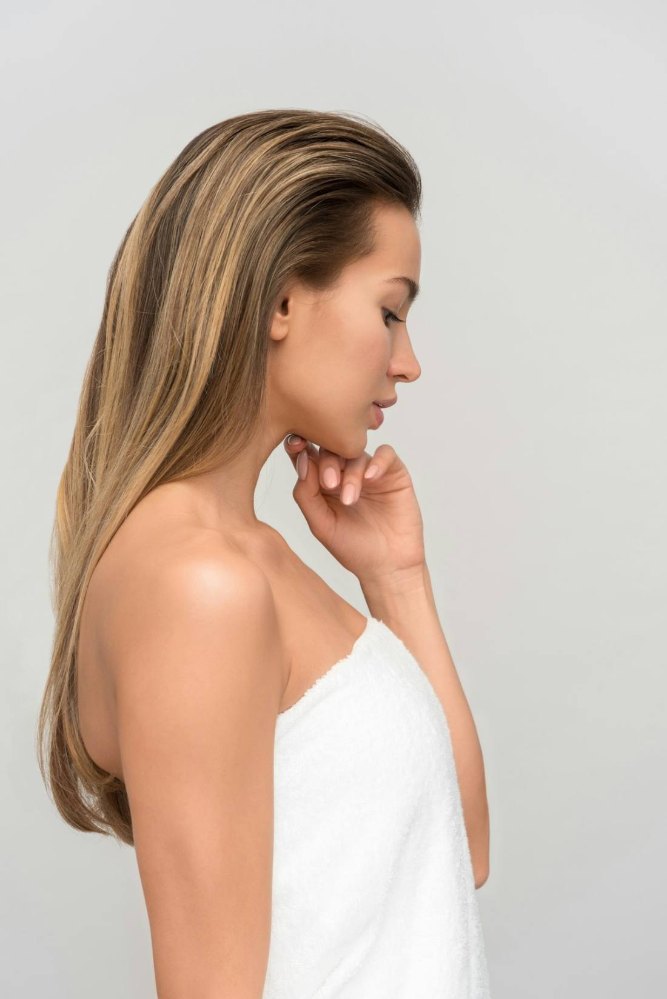

Air-Drying Isn't as Gentle as You Think
"Just let it air-dry" sounds like the kind thing to do for your hair. The reality is messier: hair is at its most fragile when it's wet, and staying wet for three hours has a cost of its own.

Photo: Unsplash
Every few years the pendulum swings. Heat is the villain, so everyone air-dries; then air-drying gets blamed, so everyone buys a new dryer. The truth sits in the middle, and it's worth knowing where.
Wet hair is weak hair
Water swells the hair shaft and temporarily loosens its internal bonds, which is why hair stretches, snaps and tangles so much more easily when it's soaked. Every hour your hair stays saturated is an hour it spends in its most vulnerable state — rubbing on a collar, getting slept on, being brushed through. That's the part of "gentle" air-drying nobody mentions: for hair that takes hours to dry, the swelling itself becomes the stress.
So blasting it dry is better? Also no
Aggressive, close-range, max-heat drying trades one problem for another — we covered the three rules that prevent that. The point isn't that heat is good and water is bad. It's that "no heat" was never the same thing as "no damage."
What the sensible middle looks like
Blot hard with a soft towel or an old t-shirt first — the less water the dryer has to remove, the less time anything spends stressed. Then dry at moderate heat with the dryer kept moving and at a distance, down to about the last trace of dampness, and let that finish on its own or on cool. You get hair out of its fragile wet state in minutes instead of hours, without the close-range blasting that causes the damage people blame on dryers.
The honest obstacle to doing this every day has never been knowledge — it's that standing there holding a dryer is tedious, so we skip it and sleep on wet hair instead. That's a tooling problem more than a discipline problem, and it's half the reason hands-free drying exists as a category now.